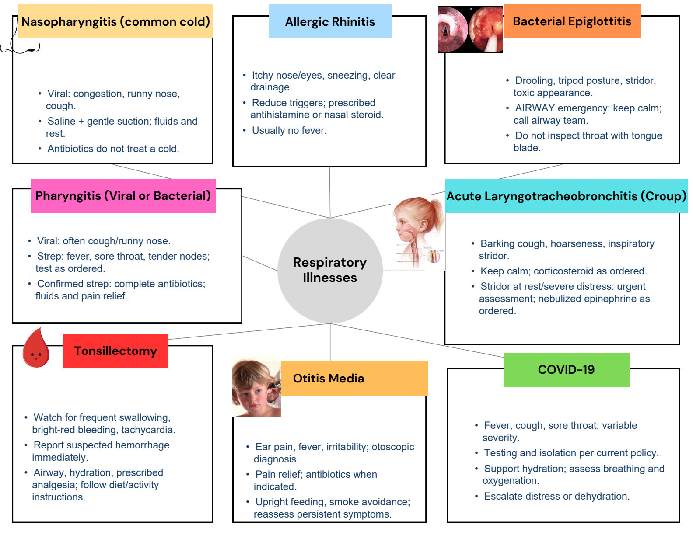
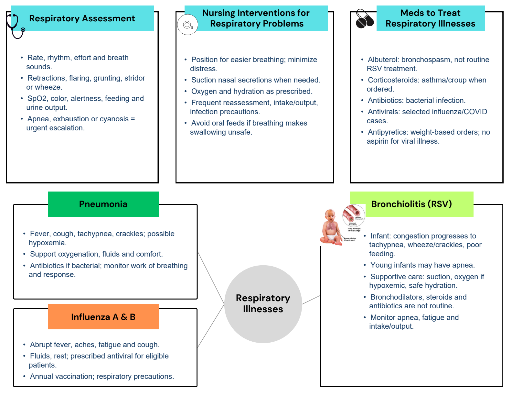
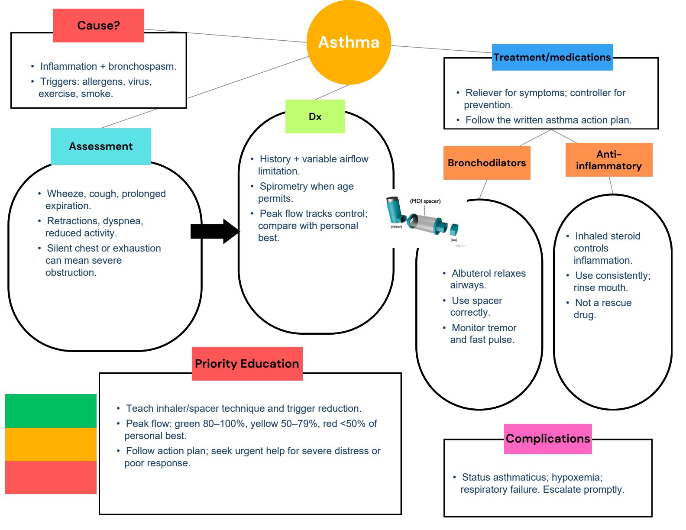
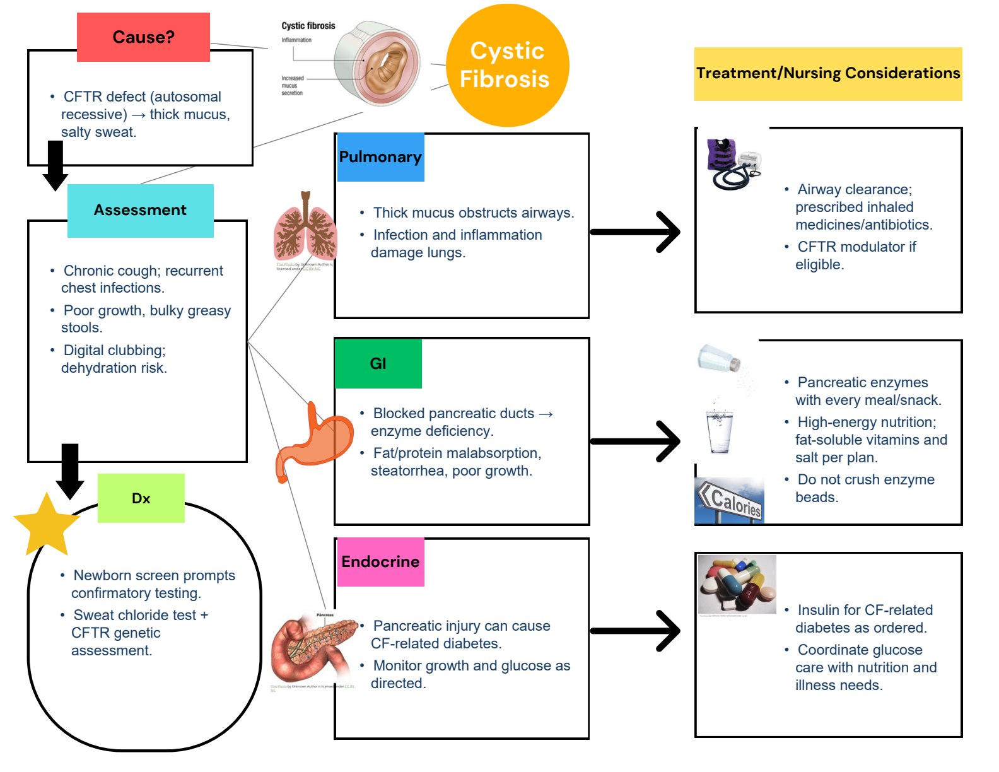

Completed maps with every original diagram. Switch to the original for blank practice.
1 / 4 Upper respiratory illnesses
Completed map · original artwork + added blue notes Completed study notes · suggested additions
Nasopharyngitis Viral: congestion, runny nose, cough. Saline + gentle suction; fluids and rest. Antibiotics do not treat a cold. Allergic rhinitis Itchy nose/eyes, sneezing, clear drainage. Reduce triggers; prescribed antihistamine or nasal steroid. Usually no fever. Bacterial epiglottitis Drooling, tripod posture, stridor, toxic appearance. AIRWAY emergency: keep calm; call airway team. Do not inspect throat with tongue blade. Pharyngitis Viral: often cough/runny nose. Strep: fever, sore throat, tender nodes; test as ordered. Confirmed strep: complete antibiotics; fluids and pain relief. Croup Barking cough, hoarseness, inspiratory stridor. Keep calm; corticosteroid as ordered. Stridor at rest/severe distress: urgent assessment; nebulized epinephrine as ordered. Tonsillectomy Watch for frequent swallowing, bright-red bleeding, tachycardia. Report suspected hemorrhage immediately. Airway, hydration, prescribed analgesia; follow diet/activity instructions. Otitis media Ear pain, fever, irritability; otoscopic diagnosis. Pain relief; antibiotics when indicated. Upright feeding, smoke avoidance; reassess persistent symptoms. COVID-19 Fever, cough, sore throat; variable severity. Testing and isolation per current policy. Support hydration; assess breathing and oxygenation. Escalate distress or dehydration. Original selectable text Exact extraction; text embedded inside pictures remains in the full-size original visual.
Respiratory
Illnesses
Nasopharyngitis (common cold) Allergic Rhinitis Bacterial Epiglottitis
Otitis Media COVID-19
Acute Laryngotracheobronchitis (Croup)
Tonsillectomy
Pharyngitis (Viral or Bacterial) 2 / 4 Respiratory assessment and lower airway illness
Completed map · original artwork + added blue notes Completed study notes · suggested additions
Respiratory assessment Rate, rhythm, effort and breath sounds. Retractions, flaring, grunting, stridor or wheeze. SpO2, color, alertness, feeding and urine output. Apnea, exhaustion or cyanosis = urgent escalation. Nursing interventions Position for easier breathing; minimize distress. Suction nasal secretions when needed. Oxygen and hydration as prescribed. Frequent reassessment, intake/output, infection precautions. Avoid oral feeds if breathing makes swallowing unsafe. Medications Albuterol: bronchospasm, not routine RSV treatment. Corticosteroids: asthma/croup when ordered. Antibiotics: bacterial infection. Antivirals: selected influenza/COVID cases. Antipyretics: weight-based orders; no aspirin for viral illness. Pneumonia Fever, cough, tachypnea, crackles; possible hypoxemia. Support oxygenation, fluids and comfort. Antibiotics if bacterial; monitor work of breathing and response. Influenza A and B Abrupt fever, aches, fatigue and cough. Fluids, rest; prescribed antiviral for eligible patients. Annual vaccination; respiratory precautions. Bronchiolitis / RSV Infant: congestion progresses to tachypnea, wheeze/crackles, poor feeding. Young infants may have apnea. Supportive care: suction, oxygen if hypoxemic, safe hydration. Bronchodilators, steroids and antibiotics are not routine. Monitor apnea, fatigue and intake/output. Original selectable text Exact extraction; text embedded inside pictures remains in the full-size original visual.
Influenza A & B
Respiratory
Illnesses
Bronchiolitis (RSV)
Pneumonia
Nursing Interventions for
Respiratory Problems
Meds to Treat
Respiratory IllnessesRespiratory Assessment 3 / 4 Asthma
Completed map · original artwork + added blue notes Completed study notes · suggested additions
Cause Inflammation + bronchospasm. Triggers: allergens, virus, exercise, smoke. Assessment Wheeze, cough, prolonged expiration. Retractions, dyspnea, reduced activity. Silent chest or exhaustion can mean severe obstruction. Diagnosis History + variable airflow limitation. Spirometry when age permits. Peak flow tracks control; compare with personal best. Treatment Reliever for symptoms; controller for prevention. Follow the written asthma action plan. Bronchodilator Albuterol relaxes airways. Use spacer correctly. Monitor tremor and fast pulse. Anti-inflammatory Inhaled steroid controls inflammation. Use consistently; rinse mouth. Not a rescue drug. Education Teach inhaler/spacer technique and trigger reduction. Peak flow: green 80–100%, yellow 50–79%, red <50% of personal best. Follow action plan; seek urgent help for severe distress or poor response. Complications Status asthmaticus; hypoxemia; respiratory failure. Escalate promptly. Original selectable text Exact extraction; text embedded inside pictures remains in the full-size original visual.
Asthma
Bronchodilators
Assessment
Dx
Cause?
Treatment/medications
Anti-
inflammatory
Priority Education
Complications
4 / 4 Cystic fibrosis
Completed map · original artwork + added blue notes Completed study notes · suggested additions
Cause CFTR defect (autosomal recessive) → thick mucus, salty sweat. Assessment Chronic cough; recurrent chest infections. Poor growth, bulky greasy stools. Digital clubbing; dehydration risk. Diagnosis Newborn screen prompts confirmatory testing. Sweat chloride test + CFTR genetic assessment. Pulmonary effects Thick mucus obstructs airways. Infection and inflammation damage lungs. GI effects Blocked pancreatic ducts → enzyme deficiency. Fat/protein malabsorption, steatorrhea, poor growth. Endocrine effects Pancreatic injury can cause CF-related diabetes. Monitor growth and glucose as directed. Pulmonary treatment Airway clearance; prescribed inhaled medicines/antibiotics. CFTR modulator if eligible. GI treatment Pancreatic enzymes with every meal/snack. High-energy nutrition; fat-soluble vitamins and salt per plan. Do not crush enzyme beads. Endocrine treatment Insulin for CF-related diabetes as ordered. Coordinate glucose care with nutrition and illness needs. Original selectable text Exact extraction; text embedded inside pictures remains in the full-size original visual.
Cystic
Fibrosis
Assessment
Dx
Cause?
Treatment/Nursing Considerations
Pulmonary
GI
Endocrine